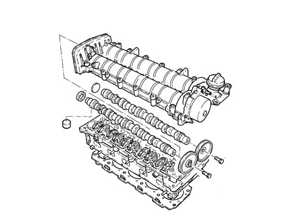

1036B OVERHEAD CAMSHAFT (1) IN CYLINDER HEAD (1)
- Path
- Descriptions > 10 ENGINE > 1036 TIMING SYSTEM > 1036B OVERHEAD CAMSHAFT (1) IN CYLINDER HEAD (1)
- Kind
- system description
- Applies to
- engines: 1.9 JTD 8v, 2.4 JTD 20v; all production periods
- Interactive page
- https://sloeber94.github.io/elrnDB-fCrm/en/#/194002375
Applies to: engines: 1.9 JTD 8v; all production periods
CONSTRUCTION SPECIFICATIONS
CAMSHAFT
In cast iron, with induction-hardened cams, driven directly by toothed belt.
The camshaft is sealed at the front by an o-ring and at the rear by the vacuum pump gasket.

TAPPETS
The mechanical tappets consist of a tappet (1) and a plate (2) in cemented, phosphated steel in contact with the cam and used to adjust valve clearance.

Applies to: engines: 2.4 JTD 20v; all production periods
CAMSHAFTS
Specifications
Type
The exhaust camshaft is controlled directly by the timing belt and transmits power to the inlet camshaft by means of a pair of straight toothed gears.
The exhaust camshaft also controls the vacuum unit fitted on the gears side.
